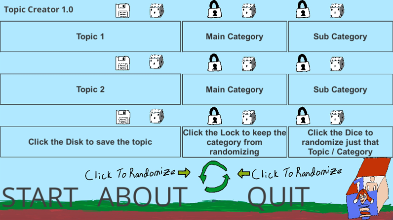
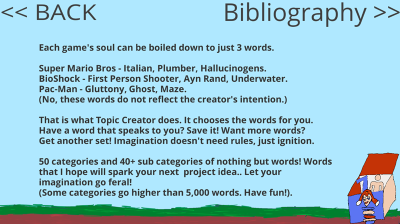

Topic Creator
A pseudo-random topic generator balancing surprise with controlled variety.



About This Project
Custom ideation engine using a pseudo-randomized weighted repeat algorithm to prevent predictable outputs. Generates three-word “topic seeds” for creative design, balancing randomness with controlled variety. Highlights algorithm design, problem-solving, and AI-enhanced creativity tooling.
Core Features
- Mostly hand-drawn UI
- Session-based word saving
- Each field being randomizable for pure resonance
Built With
- Unity
- C# Script
Made for: Creators from all walks of life (including myself), whose imagination needs a kickstart.
Status: v2.5 Complete!
Next Steps: Making a HTML5 version, named TopicCreator + AI